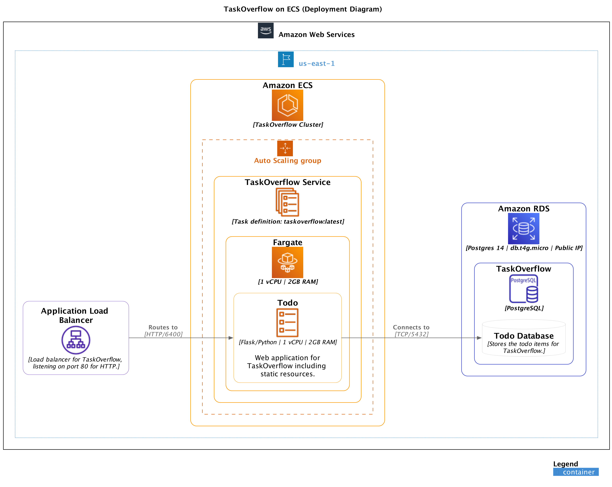

Aside
Github Classroom links for this practical can be found on Edstem https://edstem.org/au/courses/15375/discussion/1753712
Our goal is to scale out the stateless component of our TaskOverflow application across multiple compute instances. Specifically we will need to:
Route traffic to our deployed TaskOverflow application with a load balancer.
Scale out TaskOverflow instances with autoscaling.
Check the status of our instances with a healthcheck.
Dynamically scale our application based on load.
Load balancing distributes a load over a set of resources. For example, balancing network traffic across several servers. Load balancing is crucial to the scalability of modern systems, as often, one physical device cannot the volume of requests or the processing demand (e.g. the large amount network traffic for a large website).
A service which load balances, is called a Load Balancer.
A load balancer can implement many techniques to select which resource to route incoming requests toward, these techniques are the load balancer’s routing algorithm.
Below are several common routing techniques. There are many other generic and bespoke routing algorithms that are not listed.
allocates requests to the next available server regardless of where the last request was sent. It is simple, and in practice, works effectively.
sends the next request to the node with the fewest current connections. The load balancer is responsible for tracking how many connections exist to each node.
sends the next request to the node with the least weighted connections. This is similar to the above least connections method, however, each node has an associated weight. This allows certain nodes to be preferred over others. This is useful if we have an inequal distribution of compute power. We would want to give smaller nodes a reduced load in comparison to other more powerful nodes.
In some cases we may want a user to consistently be routed to a specific node. This is useful for multiple transactions that need to be done in a consistent order or if the data is stored/cached on the node. This can be done by hashing the information in the request payload or headers and then routing the request to the node that handles hashes in the range of the computed hash.
When load balancing, it is important to ensure that the nodes to which we route requests are able to service the request. A good health check can save or break your service. Consider the two following examples from UQ’s Information Technology Services (ITS):
Example 1 Early in my career, I, Evan Hughes, setup a multi-node Directory Server at UQ under the hostname of ldap.uq.edu.au. This server was a NoSQL database which implemented the LDAP protocol and supported UQ Authenticate, UQ’s Single Sign-On service.
The service had a load balancer which checked that port 389 was open and reachable. This worked well most of the time. However, the health check was too weak. When
a data-center outage occurred; and
the storage running the service disappeared; but
the service was still running in memory.
The health check passed, but in reality, the service was talking to dead nodes, causing upstream services to have intermittent failures.
Example 2 During the rollout of a new prompt for UQ Authenticate, which required users to go to my.UQ to provide verified contact details – the Blackboard (learn.uq.edu.au) service went completely offline. The health check for Blackboard at the time completed a full authentication as a test user to ensure everything was functioning as expected. Once this user was enrolled into the new rollout, the health checks started reporting failures and within a matter of minutes the entire pool of nodes were shutdown. This health check was too broad and was not isolated enough to the service that it was checking.
A lot of services will provide a health check endpoint or a metrics endpoint which can help the engineer setup a proper level of health check. We want a health check that is specific enough for the service that it is checking but not so specific that it is too brittle. For the TaskOverflow application that we have been building so far, a reasonable health check would be that the health endpoint ensures the database is available and that the application is able to connect to it.
Not all load balancers are the same. Some load balancers inspect the transmitted packets to correctly route the packet. We will cover two types of load balancers provided by AWS:
is an OSI layer 71 load balancer which routes traffic based on the request’s content. This is useful for services using HTTP, HTTPS, or any other supported protocol.
is an OSI layer 42 load balancer which routes traffic based on the source and destination IP addresses and ports. This is useful for services that are using TCP or UDP.
An AWS Elastic3 Load Balancer has three distinct components.
allows traffic to enter the Elastic Load Balancer. Each listener has a port (e.g. port 80) and a protocol (e.g. HTTP) associated with it.
are groups of nodes which the load balancer can route to. Each target group has a protocol and a port associated with it, allowing us (the programmer) to switch ports on the way through the load balancer. This is useful if the targets are using a different port to the ports we want to expose.
is the actual load balancer that routes the traffic to the target groups based on rules that we setup. The load balancer has a DNS name that we can use to route traffic to it. The load balancer also has a security group that we can use to control what traffic can enter the load balancer.

Instead of creating the maxiumum amount of services we predict we will need, we can automatically scale the number of nodes we need to minimise resources. When the load is low, we operate with minimal nodes. When the load is high, we increase the number of nodes available to cope.
To compute the resources needed, AWS relies on triggers from CloudWatch and scaling policies. Some premade triggers are based around a node’s
CPU usage,
memory usage, or
network usage.
We create custom triggers based on our application’s metrics.
This week we are going to explore load balancing the TaskOverflow service that we have been working with. The aim is to have a service that, when given a lot of requests, will be able to scale out the web server instances to handle it. This will not be a full solution to the scaling issue as our database is still a single node, but it will be a good start.4 Other methods could also be employed to help deal with the load like caching but we will leave that for another day.
Using the GitHub Classroom link for this practical provided by your tutor on edstem, create a repository to work within.
Install Terraform if not already installed, as it will be required again this week.
Start your learner lab and copy the AWS Learner Lab credentials into a credentials file in the root of the repository.
In the repository you will have the starter Terraform code for the ECS path from last week.
Aside
In 2024 we have removed the EC2 pathway from this practical but we have left the deployment diagram to allow comparisons to ECS. Please skip to Section 4.2 for the ECS approach.

This week we need create an Application Scaling Policy for our ECS service and a Load Balancer to handle the routing of our service. Our goal is to implement the deployment diagram below.

Last week, when we setup the ECS service, we noticed that we could not get an endpoint because the instance would only be provisioned after our Terraform code had run. This is because ECS is already a dynamic scaling service and it expects a load balancer to route its traffic. To get started we need to create a target group which defines where traffic can be routed to.

» cat lb.tf
resource "aws_lb_target_group" "todo" { name = "todo" port = 6400 protocol = "HTTP" vpc_id = aws_security_group.todo.vpc_id target_type = "ip" health_check { path = "/api/v1/health" port = "6400" protocol = "HTTP" healthy_threshold = 2 unhealthy_threshold = 2 timeout = 5 interval = 10 } }
Load balancing is core to how ECS works and so the aws_ecs_service resource that we used last week accepts a load_balancer block. To associate the target group with our ECS service, modify the given aws_ecs_service.taskoverflow resource to include a load_balancer block.
» cat ecs.tf
load_balancer { target_group_arn = aws_lb_target_group.todo.arn container_name = "todo" container_port = 6400 }
With the internal side of the load balancer done, we can create it and a firewall for the external side. This firewall allows us to restrict what traffic will be allowed to reach the load balancer.
» cat lb.tf
resource "aws_lb" "taskoverflow" { name = "taskoverflow" internal = false load_balancer_type = "application" subnets = data.aws_subnets.private.ids security_groups = [aws_security_group.taskoverflow.id] } resource "aws_security_group" "taskoverflow" { name = "taskoverflow" description = "TaskOverflow Security Group" ingress { from_port = 80 to_port = 80 protocol = "tcp" cidr_blocks = ["0.0.0.0/0"] } egress { from_port = 0 to_port = 0 protocol = "-1" cidr_blocks = ["0.0.0.0/0"] } }
Now over to the external side of the load balancer. We need to create a listener which is the entry point for the load balancer.
» cat lb.tf
resource "aws_lb_listener" "todo" { load_balancer_arn = aws_lb.taskoverflow.arn port = "80" protocol = "HTTP" default_action { type = "forward" target_group_arn = aws_lb_target_group.todo.arn } }
If we deployed now, we would have implemented the deployment diagram above. However, we want to add autoscaling to our service so that it can scale up and down based on the load.
» cat autoscaling.tf
resource "aws_appautoscaling_target" "todo" { max_capacity = 4 min_capacity = 1 resource_id = "service/taskoverflow/taskoverflow" scalable_dimension = "ecs:service:DesiredCount" service_namespace = "ecs" depends_on = [ aws_ecs_service.taskoverflow ] } resource "aws_appautoscaling_policy" "todo-cpu" { name = "todo-cpu" policy_type = "TargetTrackingScaling" resource_id = aws_appautoscaling_target.todo.resource_id scalable_dimension = aws_appautoscaling_target.todo.scalable_dimension service_namespace = aws_appautoscaling_target.todo.service_namespace target_tracking_scaling_policy_configuration { predefined_metric_specification { predefined_metric_type = "ECSServiceAverageCPUUtilization" } target_value = 20 } }
This auto scaling policy looks at the average CPU utilization of the service and scales up if it is above 20% and scales down if it is below 20%. This is a very simple policy but it is a good starting point. We can now deploy our service and see it scale up and down.
Continue onto the next section to see how to send multiple requests to our service to generate traffic to trigger scaling.
We have a service but us visiting it in our web browser is not going to be enough load for our scaling policies to trigger. To do this we will employ the help of a tool called k6, which is a relatively new load testing tool. To install k6 visit https://k6.io/docs/get-started/installation/. It can be installed in the code spaces environment or locally.
We have provided an example k6 file, which is JavaScript code that creates 1000 to 5000 users to call the list endpoint of our service.
» cat k6.js
import http from 'k6/http'; import { sleep, check } from 'k6'; export const options = { stages: [ { target: 1000, duration: '1m' }, { target: 5000, duration: '10m' }, ], }; export default function () { const res = http.get('http://your-loadBalancer-url-here/api/v1/todos'); check(res, { 'status was 200': (r) => r.status == 200 }); sleep(1); }
We can then run this file using the following command.
execution: local script: load.js output: - scenarios: (100.00%) 1 scenario, 5000 max VUs, 11m30s max duration (incl. graceful stop): * default: Up to 5000 looping VUs for 11m0s over 2 stages (gracefulRampDown: 30s, gracefulStop: 30s) running (00m05.4s), 0091/5000 VUs, 140 complete and 0 interrupted iterations default [--------------------------------------] 0091/5000 VUs 00m05.4s/11m00.0s
With all the pieces together we can now see if our efforts have paid off. While the k6 code from above is running, let’s go to the ECS console and see if we can see any scaling events. Navigate to ECS -> Clusters -> taskoverflow -> Services -> taskoverflow -> Configuration and tasks.

In this panel we can see our Auto Scaling configuration which lists the desired, minimum and maximum number of tasks. The policies are listed further down and we can view the alarm which is a graphical representation of the CPU utilization vs the target value.

In the Cloudwatch Alarm panel you will notice that we have two different alarms, these are for the scaling up and down of the service. Selecting the alarm you can view the status where an "in alert" alarm is when the auto scaling configuration needs to action increasing/decreasing the number of instances.

You have now deployed an scalable stateless service. If you would like to experiment with generating different load for the service, please read through the k6 documentation at https://k6.io/docs/.
In the cloud assignment, we will use k6 to test various scenarios as described in the task sheet and evaluate how your service performs. It will be beneficial to be familiar with how this type of testing works.
[1] B. Webb and R. Thomas, “Distributed systems II slides,” March 2024. https://csse6400.uqcloud.net/slides/distributed2.pdf.
1OSI layer 7: Application, in this case HTTP/HTTPS/etc
2OSI layer 4: Transport, in this case TCP/UDP
3Elastic, in a cloud computing context, refers to the system’s ability to adapt to workload by starting and stopping infrastructure services to meet demand.
4We will not explore scaling persistent data in the practicals. If you wish to try in your assignment, please see some of the concepts presented in the Distributed Systems II lecture [1].